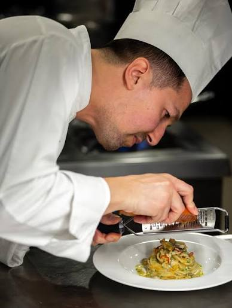

ABOUT OUR CHEF
A Tradition, Handed Down
Chef Marco grew up in a small town outside Bologna, where Sundays meant fresh pasta on the kitchen table and storics passed down with each recipe. Today., he brings that same tradition to The Pasta Lane--honest food made with patience, respect, and strong, real ingredients.
"Good pasta doesn't need to be complicated. It just needs to be made with heart."
-Chef Marco
03-- OUR STORY
04--
THE
EXPERIENCE
